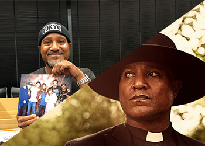
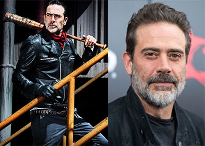

JavaScript機能
本日は：です。
ナビゲーションはウィンドウ幅が768pxになるとハンバーガーメニューに切り替わります。
Ajaxのメニューにはサブメニューはありません。
はじめに（TWDについて）
ウォーキングデッドシリーズは2010年よりアメリカで放送が開始。極限に追い込まれた人間の心理を描いたヒューマンドラマ。
現代社会の安全が破壊され秩序を失った世界で、生存者たちは確固たる人間性を保てるのか？そして生きるための「愛、強さ、責任感、自制心」とは？。
2018年秋から待望のシリーズ9作目の放送が始まり、海外のみならず日本国内でも非常に人気の高い海外ドラマで、今後の展開から目が離せない注目のドラマです。
アコーディオン（シーズン9主要キャスト）
-
- 今シーズンで降板する主人公
-
平和だった時代は保安官代理を務めていた。息子カールを亡くして悲しむものの、長きに渡る全面戦争の末ニーガンら「救世主」を倒し、彼らを生かして共に暮らしていくことを選ぶ。
リックRick Grimes
Andrew Lincoln
-
- 絶大な人気を誇るオリジナルキャラ
-
シーズン1から登場している数少ない人物。
口が悪いが、お人好しで仲間を気づかうタフガイ。武器はクロスボウで、バイクを愛用している。戦闘力は高めでリックの相棒的存在。ダリルDaryl Dixon
Norman Reedus
-
- 最も大きな変化をした女性
-
シーズン1から登場している数少ない人物。
当初は夫の暴力に怯えて過ごす気弱な女性でしたが、その夫がウォーカーとなった際に自分で殺したのがきっかけで、冷静でしたたかな面を持つようになります。シーズンが進むに連れて勇敢な女性になり、現在はグループの戦力として活躍する。キャロルCarol Peletier
Melissa McBride
-
- 芯の強いヒル・トップのリーダー
-
シーズン2から登場している人物。
出会って早々意気投合したグレンとは恋人となり、更には結婚し婚約関係を結びます。その後、妊娠が発覚しますがグレンはニーガンに殺されてしまいます。ニーガンを生かすことにしたリックの決断に不満を感じている。マギーMaggie Greene
Lauren Cohan
-
- ドレッドヘアに日本刀！
-
シーズン2から登場している人物。
ウォーカーや生存者を相手に大立ち回りを繰り広げる一方で、女性らしい繊細な気遣いができる人物です。リックとは何度も死線を越えていくうちに心を通わせていき、遂には恋人関係になります。ミショーンMichonne
Danai Gurira
-
- 元警察官学校の生徒
-
シーズン4から登場している人物。
シーズン5になるとタラは精神的に成長し強くなったことが示され、ユージーンとも友情を築いた。彼女の強さと決断力はユージーンに影響を与え、物資調達の最中に負傷し意識不明の状態になったタラをユージーンが助ける結果になった。タラTara Chambler
Alanna Masterson
-
- 高い知性を持つ臆病者
-
シーズン4から登場している人物。
基本的に控えめな性格で、ウォーカーと戦うことが苦手。自分が生き残ることを最優先に考えており、彼が重要な科学者であるという嘘を信じた仲間が自分を守って犠牲になったこともあった。 人をうまく誘導することに長けているにも関わらず悪人ではなく、ユージーンは機会があれば善い行いをしたいという意思を持っており、やがて生き延びていくために良心というものの大切さを考えるようになると、仲間たちの幸せのために自分の嘘を告白した。ユージーンEugene Porter
Josh McDermitt
-
- 銃器やナイフの扱いに精通した女性
-
シーズン4から登場している人物。
生意気な面もあるが、ほとんどの状況で冷静であり現状を明確に把握している。 めったにジョークなどは言わず、敵対勢力に対しての攻撃の際にもほとんど躊躇はしない。リックらのグループであるアクレサンドリアに属していて、一匹狼的な側面がある。その故、独断行動を取って失敗した過去あり。ロジータRosita Espinosa
Christian Serratos
-
- 善良な神父
-
シーズン5から登場している人物。
「救世主」に捕まり感染症になってしまい、片目がほとんど見えなくなってしまった。シーズン7ではグレンに代わってゲイブリエルが道徳的指針となり、信仰と希望的観点をもって仲間たちにアドバイスをするようになった。ゲイブリエルGabriel Stokes
Seth Gilliam
-
- JSS(just survive somehow)
-
シーズン5から登場している人物。
人を寄せ付けない雰囲気を持ちトラウマを抱えた少女で、何度も安全なアレクサンドリアを出て行こうとするなど難解な行動を取っていたが、カールとの交流を通して次第に心を開いてゆき、他の住人たちとも信頼関係を築いた。アレクサンドリアが救世主の支配を受けた後、姿を隠すためヒルトップで暮らしていたマギーの元へ身を寄せ、妊娠中のマギーのサポートをした。イーニッドEnid
Katelyn Nacon
-
- 凄腕のなんでも屋
-
シーズン6から登場している人物。
ヒルトップで物資調達・スカウト任務・他の共同体との交渉役を務める。単独で動けるほどサバイバル能力に長けていて格闘面でもリック、ダリル、モーガンに負けず劣らずの力を見せる。ジーザスJesus
Tom Payne
-
- 虎を手なずけている王国のリーダー
-
シーズン7から登場している人物。
元々は動物園の飼育員で劇団で演技の勉強をしていたため住民達の望む自分を演じているとキャロルに告げるが、住民からの信頼が厚く本人も王国と住民を守るため最善の方法を考え行動している。またウォーカーと戦える力を持っていて町の外での行動にも積極的に参加している。救世主との戦いでは住民の指揮を高めて基地に向かうなど住民への気遣いを欠かさない。私利私欲では動かず何より平和を望んでいる。エゼキエルEzekiel
Khary Payton
-
- 革ジャンとバットがトレードマーク
-
シーズン6から登場している人物。
周囲の町を傘下において複数の基地を持つ救世主のリーダー。圧倒的カリスマ性を持ち格闘だけではなく、政治力、知力にも優れており優秀な人材を好んで登用している。有刺鉄線を巻いたバットをルシールと呼んでいるが名前の由来は元奥さんの名前。容赦なく人間の頭を殴る冷酷な人間。リックらのグループと全面戦争をする。結果的に、リックらに負け殺されはしなかったものの檻に閉じ込められてしまう。ニーガンNegan
Jeffrey Dean Morgan
モーダルウィンドウ（TWDについて）
スライドショー（オフショットギャラリー）
オート系
画像は1.5秒ごとに自動で切り替わります。再生・停止はボタンで操作可能です。


ライトボタン系
画像の切り替えはドットインジケーターをクリックしてください。
バナー表示系
画像の切り替えはサムネイルをクリックしてください。


タブ（シーズン8までの主要キャスト）
アトランタからのメンバーであり、初期では格闘より機動力を生かした物資調達をすることが多かった。しかしその後成長しウォーカーとも対等に戦えるようになる。またデールを慕っていたこともあり、デールから車の修理についての知識などを教わっている。初期から外に出て行動することが多く、リックを救ったりタラを救ったりと人を救出することも多かった。そしてリック達メンバーからの信頼も厚く、農場で知り合ったマギーと関係を深めてその後結婚している。更にマギーは妊娠するが、グレンは子どもの姿を見ることなくニーガンに殺されてしまう。
グレンGlenn Rhee
Steven Yeun
テキストトトトトトトトトトトトトトトトトトトトトトトトトトトトトトトトトトトトトトトトトトトトトトトトトトトトトトトトトトトトトトトトトトトトトトトトトトトトトトトトトトトトトトトトトトトトトトトトトトトトトトトトトトトト
ローリLori Grimes
Sarah Wayne Callies
テキストトトトトトトトトトトトトトトトトトトトトトトトトトトトトトトトトトトトトトトトトトトトトトトトトトトトトトトトトトトトトトトトトトトトトトトトトトトトトトトトトトトトトトトトトトトトトトトトトトトトトトトトトトトト
カールCarl Grimes
Chandler Riggs
テキストトトトトトトトトトトトトトトトトトトトトトトトトトトトトトトトトトトトトトトトトトトトトトトトトトトトトトトトトトトトトトトトトトトトトトトトトトトトトトトトトトトトトトトトトトトトトトトトトトトトトトトトトトトト

日本名英語名
本名